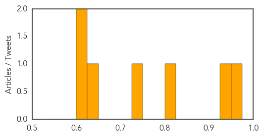

Meningitis
30-Day Web Trend
5 alerts, 0 warnings

30-Day Twitter Trend
0 alerts, 0 warnings

Article Locations

Article Confidences
Top Articles:
- 0.972
- Mosquitos which can carry deadly disease found in UK for the first time
- 0.926
- Health Officials To Evaluate Impact of Meningitis Vaccine At PC
- 0.804
- Results to be released Thursday in UGA student's death
- 0.727
- Royal Liverpool Hospital's out-of-date sandwiches, windows caked in grime and stinking drains
- 0.645
- Report Lifts Lid on Montenegro's Dirty Hospitals
- 0.621
- Officials probing if meningitis killed Oregon student amid outbreak
- 0.621
- Officials probing if meningitis killed Oregon student amid outbreak
Top Tweets:
-
No tweets found for Feb 19, 2015
Bubonic Plague
30-Day Web Trend
5 alerts, 0 warnings
30-Day Twitter Trend
0 alerts, 0 warnings

Article Locations

Article Confidences

Top Articles:
-
No articles found for Feb 19, 2015
Top Tweets:
-
No tweets found for Feb 19, 2015